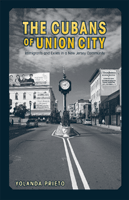

Ethnic community building and immigrant success in "Havana on the Hudson"
Ethnic community building and immigrant success in "Havana on the Hudson"


 Ethnic community building and immigrant success in "Havana on the Hudson"
Ethnic community building and immigrant success in "Havana on the Hudson"

|  |
The Cubans of Union CityImmigrants and Exiles in a New Jersey CommunityYolanda Prietopaper EAN: 978-1-59213-300-0 (ISBN: 1-59213-300-2) |
"This is a valuable work of original scholarship that makes a number of significant contributions to our understanding of international migration in general and the Cuban case in particular. Far from being a snap-shot of the community, Prieto�s book benefits from an ongoing research agenda that engages some of the most enduring issues of immigration scholarship and the study of race and ethnic relations."
—Ted A. Henken, Associate Professor, Sociology and Black and Hispanic Studies, Baruch College, CUNY
As a result of the conflicts between Cuba and the United States, especially after 1959, Cubans immigrated in great numbers. Most stayed in Miami, but many headed north to Union City, making it second only to Miami in its concentration of Cubans. In The Cubans of Union City, Yolanda Prieto discusses why Cubans were drawn to this particular city and how the local economy and organizations developed. Central aspects of this story are the roles of women, religion, political culture, and the fact of exile itself. As a member of this community and a participant in many of its activities, Prieto speaks with special authority about its demographic uniqueness. Far from being a snapshot of the community, The Cubans of Union City conveys an ongoing research agenda extending over more than twenty years, from 1959 to the 1980s. As a long-term observer who was also a resident, Prieto offers a unique and insightful view of the dynamics of this community's evolution.
Excerpt available at www.temple.edu/tempress
"The Cubans of Union City fills an important gap in the scholarly literature. It is an original ethnographic study grounded on a strong theoretical framework and enriched by combined qualitative and quantitative research methods. Prieto offers a very well documented in-depth analysis of the Union City Cuban community, making pertinent comparisons with the larger Miami Cuban community. As a member of the community, she has witnessed the many changes that have occurred in Union City for several decades, and provides important insights that might have escaped an outside researcher."
—Edna Acosta-Bel�n, Distinguished Professor, University at Albany, SUNY
"Yolanda Prieto draws a moving, decades-long history of Union City from a Cuban perspective.... Above all Yolanda Prieto has written a humane book on what she calls 'Cuba's northernmost province.'''
—The Miami Herald
"Prieto�s community study reminds us that there is no one typical Cuban immigrant experience (despite the homogenizing portrayals of the news and film media), and examining the differences are essential to understanding the impact that race, ethnicity, class, gender, religion, and federal and local politics have on successful integration or assimilation.... The Cubans of Union City is a highly readable and engaging study appropriate for undergraduate and graduate courses in immigration, Latino studies, and local history. It is sure to inspire a new generation of scholars to examine other understudied aspects of Cuban migration."
—Camino Real
"Those familiar with the Cuban community in Miami will welcome this work as a useful tool that will facilitate comparative analyses and a better framework to contextualize the foundations, development, and history of Cuban communities in the United States.... Most importantly, unlike most studies on the Cuban migration, this work focuses on two important contributors to community building: women and the Catholic Church.... The Cubans of Union City is an important work of original research, thoroughly documented, and well written. Cuba's 'northernmost province' can now take its rightful place in the literature of the Cuban migration to the United States.'''
—The Americas
"In The Cubans of Union City, Yolanda Prieto creates a moving, decades-long history of Cuban immigration to Union City, New Jersey....[T]he strength of the volume comes from the richness of its ethnography...Prieto has observant, empathetic eyes that shine throughout the book as she documents their stories."
—The American Journal of Sociology
"The Cubans of Union City is an important addition to the field of studies on Cuban Americans�. Prieto has written both a history of the town and a profile of the vibrant Cuban community�. What emerges is a rich canvas of an energetic community that was grateful to be in the United States and proud to call themselves Cuban and Americans."
—Multicultural Review
"Prieto has performed an important task by expanding the narrative of Cuban migration beyond the Miami-Havana chronicle. Prieto's rich account of the moulding of Union City into Cuba's northernmost province will leave readers with a heightened appreciation of these processes and a sense of place that will endure long after the city is no longer a Cuban American stronghold."
—The Bulletin of Latin American Research
"For scholars interested in learning about Union City, the book is invaluable. And for scholars interested in deepening their understanding of Hispanics, particularly for understanding objective and subjective differences among Hispanics, the book is also useful.... Prieto contributes to a deeper understanding of the Cuban-American experience. And in highlighting how important government policy was to the impressive adaptation of the first wave of Cuban �migr�s, her book can make an important contribution to the current debate about immigration reform. Policymakers would do well to recognize that immigrants with legal rights and access to social benefits have much to contribute to America."
—Social Forces
"A fine exemplar of the sociological imagination, Prieto�s account provides a balanced and sympathetic interpretation of the Cuban diaspora.... Prieto�s work contributes substantially to broadening academic and public discussions about the Cuban exodus, traditionally centered on Miami�s ethnic enclave. The Cubans of Union City is an incisive case study of contemporary immigration and ethnicity in a changing urban landscape. Prieto ably underlines the historical origins of the Cuban exodus, the development of Cuban businesses and voluntary associations, the labor force participation of Cuban women, the role of the Catholic Church in sustaining a sense of Cuban identity, and the centrality of political exile for that identity. In the end, she shows that U.S. immigration policy promoted Cubans� swift integration into the host society by providing legal privileges and economic assistance during the cold war."
—The New West Indian Guide
"[A] welcome examination of Union City, a Cuban community on the banks of the Hudson River that received exiles and immigrants from Cuba beginning in the 1950s... [T]he portrait that emerges depicts a Cuban working-class community not much different in political, social, and economic matters from, for example, Dade County�s strongly middle-class experience."
—Journal of American Ethnic History
"[Prieto's] qualitative research, consisting of ten years of extended interviews and ethnographic work in Union City, provides rich illustration to a multi-faceted analysis of a Northern city enriched by four waves of Cuban immigration. The book is well-organized and Prieto�s accessible writing style eases the transition from description to interview and ethnographic data.... This book will find a home on the shelf of anyone interested in Cuban/American relations, Cuban culture, immigration, or immigrant communities and ethnic enclaves."
— Contemporary Sociology
Preface
Acknowledgments
1. Introduction
2. Cuban Union City: Origins, Development, and Change
3. Building Community: Economic Growth and the Rise of Local Organizations
4. Women Leave Home for the Factory: Gender, Work, and Family
5. Saint Augustine Parish and Cuban Adaptation: Religion and Reconciliation
6. Exile, Ethnic Identity, and Political Culture
7. Union City Cubans and Community Change: Some Theoretical Considerations
Abbreviations
Notes
Bibliography
Index
 | Yolanda Prieto is Professor Emerita in the School of Social Science and Human Services of Ramapo College of New Jersey. |
Latino/a Studies
Sociology
Urban Studies
© 2015 Temple University. All Rights Reserved. This page: http://www.temple.edu/tempress/titles/1519_reg.html.